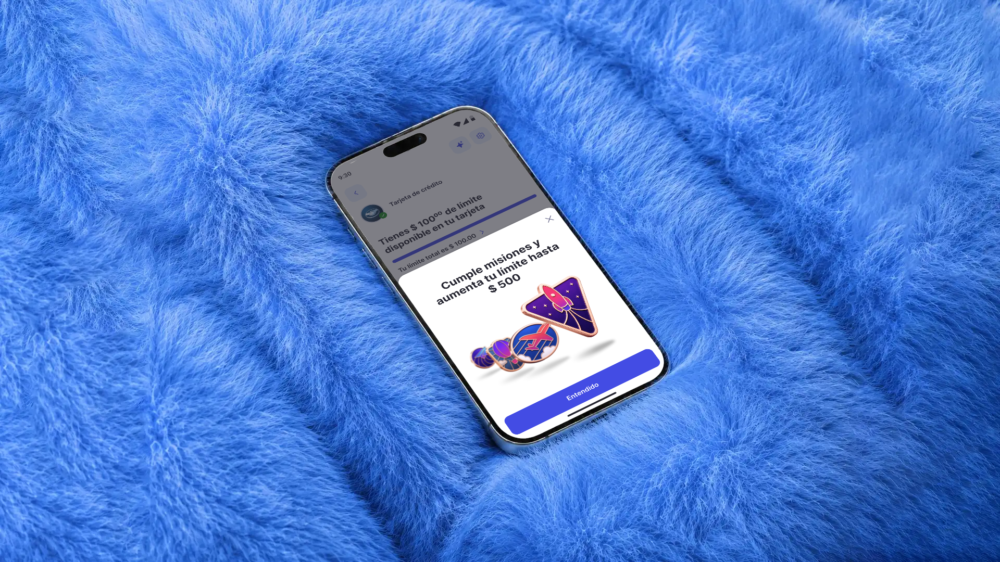
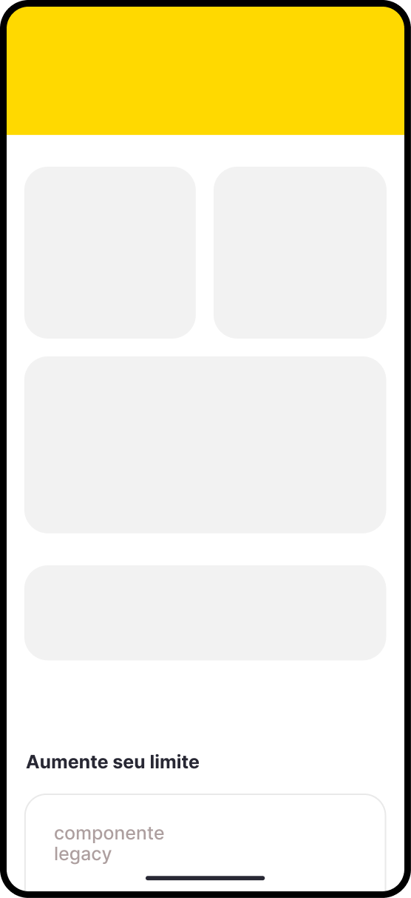
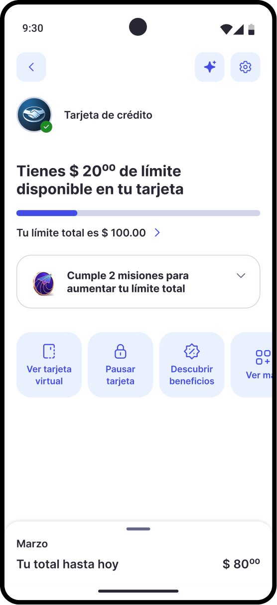
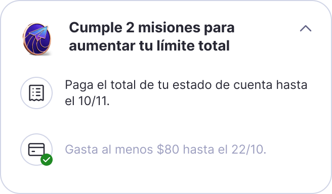
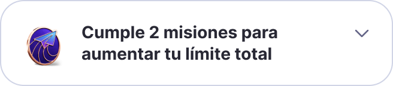
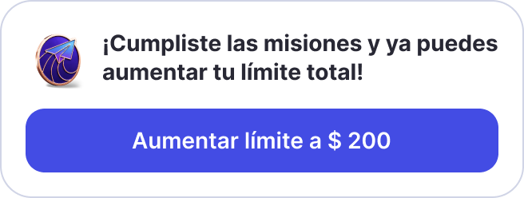
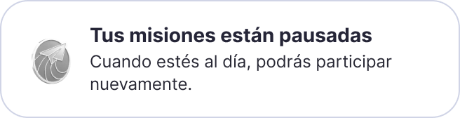
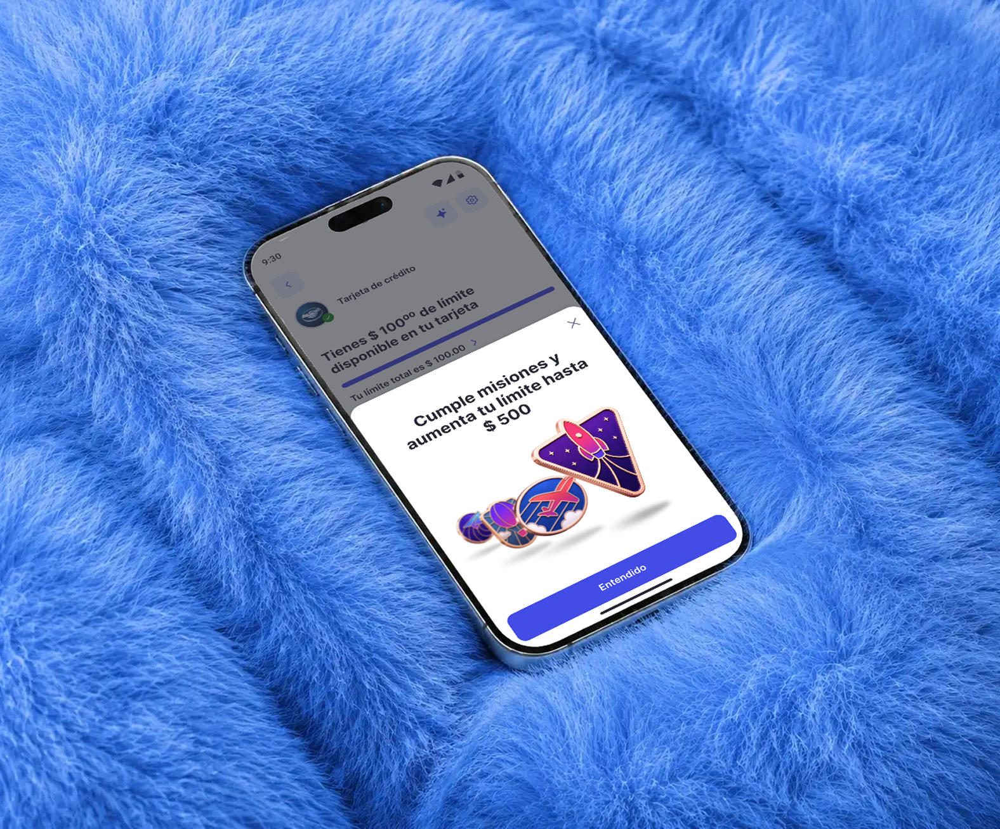

01.
Uma experiência gamificada para engajar pessoas com limite baixo no cartão de crédito Mercado Pago
Contexto
Evoluir uma experiência existente para estimular o engajamento
A gamificação já fazia parte do cartão Mercado Pago, oferecendo missões que incentivavam comportamentos financeiros associados à evolução do limite de crédito.
Nosso desafio era modernizar essa jornada durante a transição para um novo design system, tornando as missões mais visíveis, a progressão mais clara e a experiência mais envolvente.
Objetivos de
negócio
Aumentar o engajamento de usuários com limites baixos
Diminuir os contatos com o atendimento (CX)
Elevar a conclusão das missões
Reduzir o abandono da jornada
Indicadores definidos para orientar o redesign.
Mais visibilidade
Sem adicionar
complexidade
Na experiência anterior, as missões ficavam na parte inferior do dashboard, podendo aparecer parcialmente ou abaixo da primeira dobra, o que dificultava sua descoberta.
No redesign, reposicionamos a gamificação em uma área de maior destaque, utilizando um componente expansível que permite acompanhar o progresso sem interromper a navegação.

abaixo da primeiradobra

Visual craft e
design system
A transição para o novo design system trouxe a oportunidade de evoluir a linguagem visual da gamificação e sua integração com o restante do produto.
Como a nova biblioteca não contemplava componentes específicos para missões, desenvolvemos uma solução customizada utilizando seus tokens e padrões visuais.





A experiência
Tornando a evolução do limite mais envolvente
Combinamos missões de consumo e pagamento com quatro níveis de progressão, permitindo que os usuários acompanhem sua evolução ao longo da jornada.
Visual storytelling
Uma jornada visual inspirada no voo
Criamos quatro insígnias inspiradas em diferentes formas de voo, representando a evolução do usuário a cada nível.
Os elementos foram cocriados com o time utilizando ferramentas internas de IA e refinados em colaboração com a liderança de Design.
- níveis de
evolução - 04
- missões
por ciclo - 02
- países
diferentes - 03


Motion & interactions
Celebrando cada conquista
Criamos telas dedicadas nos momentos de conquista, exibidas quando o usuário conclui um ciclo de missões e avança para o próximo nível.
Nessas experiências, utilizamos motion para celebrar a evolução e tornar cada conquista mais expressiva e memorável.
Screens
1 de 6
A entrega
Redesign implementado e lançado em produção
A solução passou por testes com usuários conduzidos pelo time de Research, além de ciclos de refinamento e alinhamento com Design, Produto e Engenharia.
Acompanhamos a implementação e realizamos o QA de Design para garantir a fidelidade visual, a consistência dos componentes e o comportamento das interações.